Overview
Freelance visual designer for Joydotz, a hydrocolloid spot-patch brand, through Swedish Falls LLC. The brand was repositioning for the US market with a Gen Z audience in mind, and the existing site still read as a generic acne-treatment product. I rebuilt the color system, the product and site visuals, and the site's interaction design around a softer, more collectible identity that fit how that audience actually shops.
US Rebrand+Gen Z
Visit joydotz.us ↗Brand Style Guide
Built from the packaging outward: one color shift, two typefaces, three patch shapes.
01Color Evolution
#E3C0B2
The original brand color: one muted nude carrying the whole identity.
#FF79C4 · #B3C8FC · #FEEDF9
Pulled from the new pink, periwinkle and holographic packs. 7520 C stays on as a warm neutral.
02Core Palette
#F5F2F2#B3C8FC#E3C0B2#FAD5ED#FF79C4#ACB3EF#B6B2D7#865177Cool family · sky to dusk
#F5F2F2#B3C8FC#ACB3EF#B6B2D7#6C6980Warm family · petal to berry
#FEEDF9#FAD5ED#E2B8B2#FF79C4#773B5703Gradients
#F5F2F2 10% · #B3C8FC 51% · #FAD5ED 88%
#FF79C4 0% · #B3C8FC 50% · #FEEDF9 100%
04Typography
joydotz hydrocolloid spot patches
a soft little layer of comfort and joy.
05Shape Language
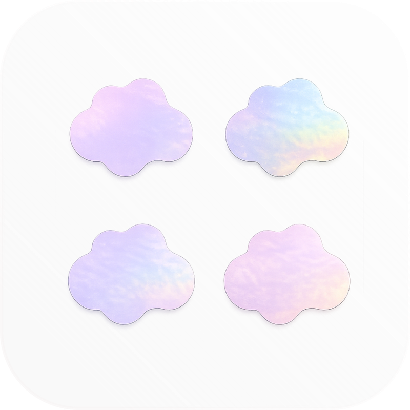
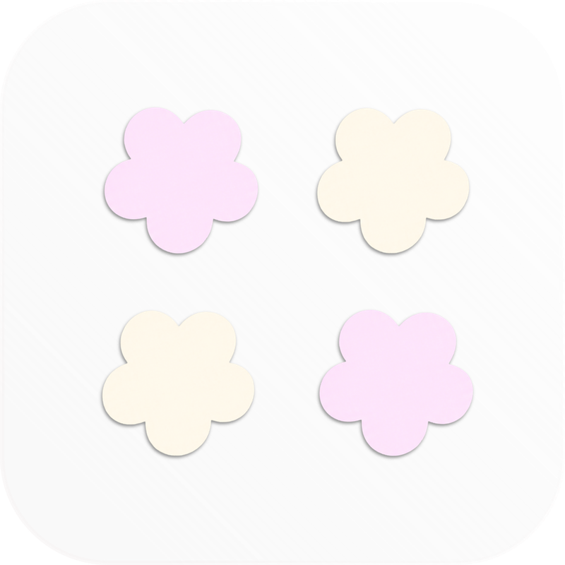
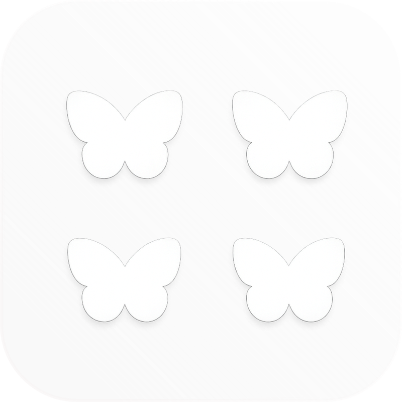
06Packaging
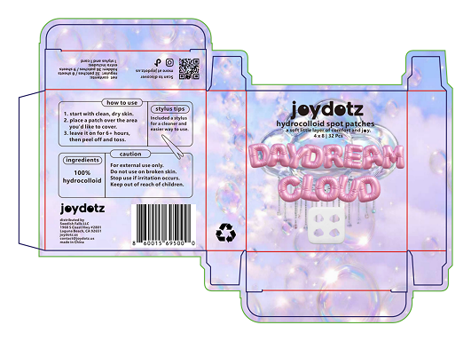
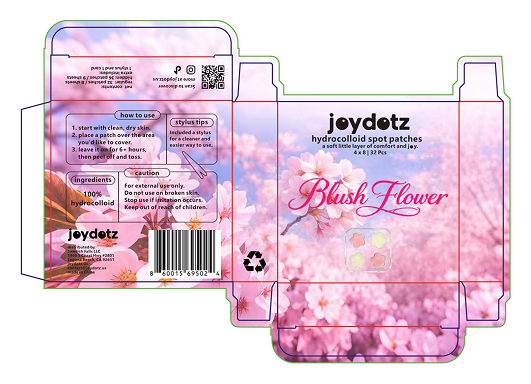
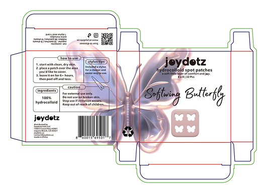
One dieline, three skins. Each box takes its color world from the patch inside.
Homepage
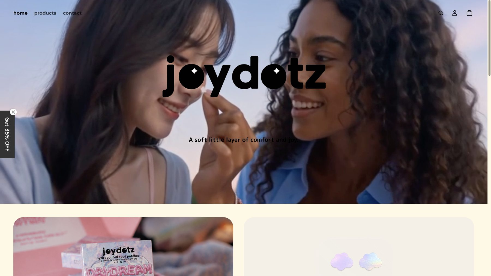
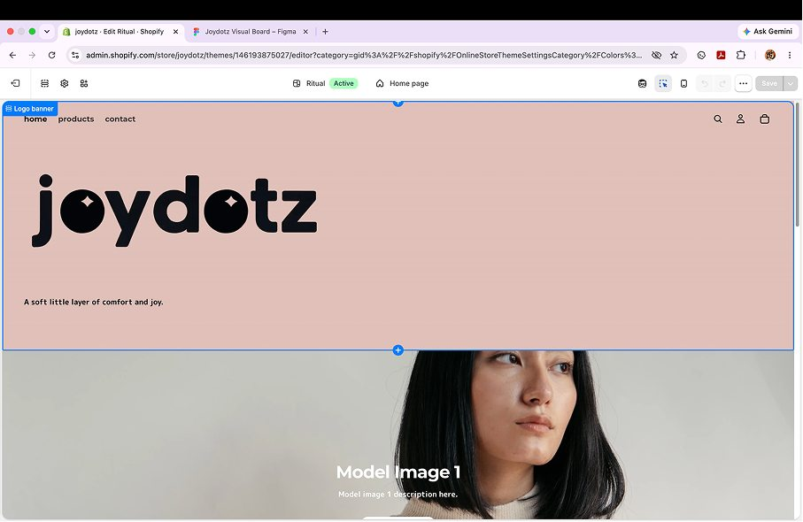
After Before Hover for beforeVideo hero, gradient nav, and sparkle eyes set into the logo.
Product Listing
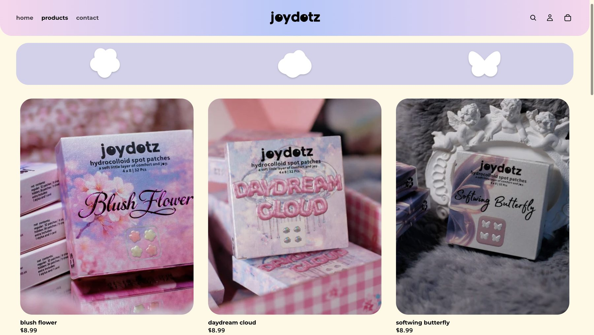
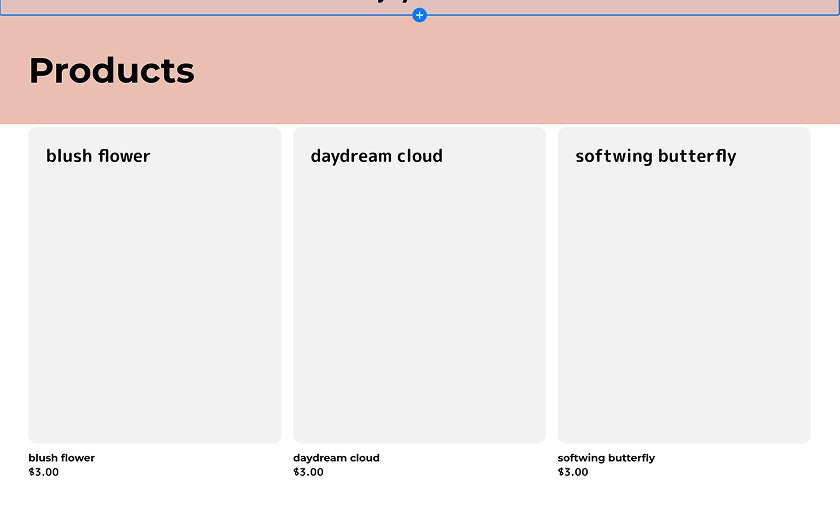
After Before Hover for beforeShape filter (flower / cloud / butterfly) mirrors the three patch collections, glows on hover.
Product Page
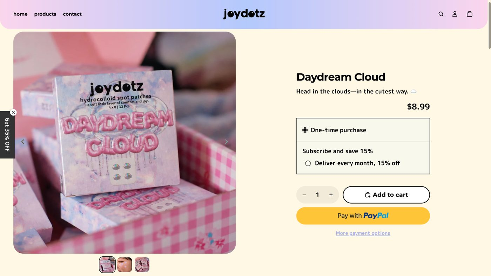
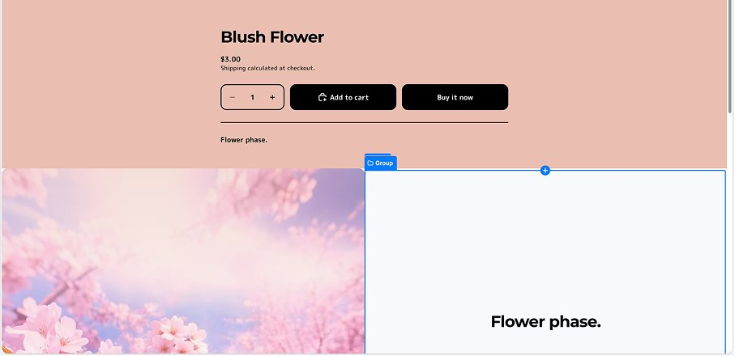
After Before Hover for beforeReal packaging photography, subscribe-and-save, checkout buttons matched to the palette.
Cross-Sell
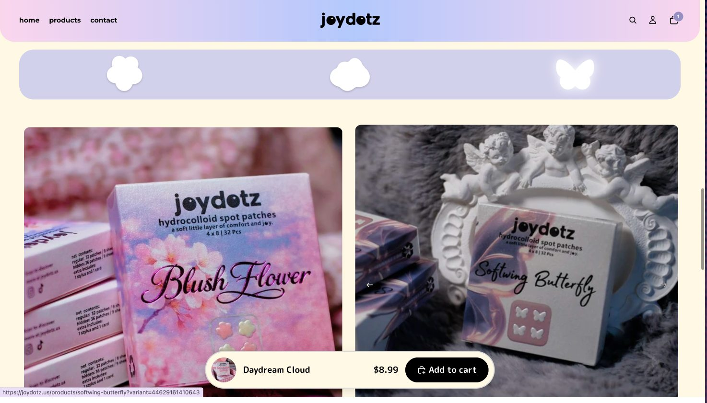
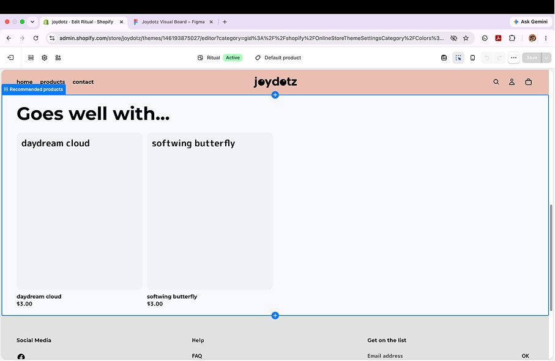
After Before Hover for beforeSticky add-to-cart bar, "goes well with" cards pick up the shape icons and glow.
Footer
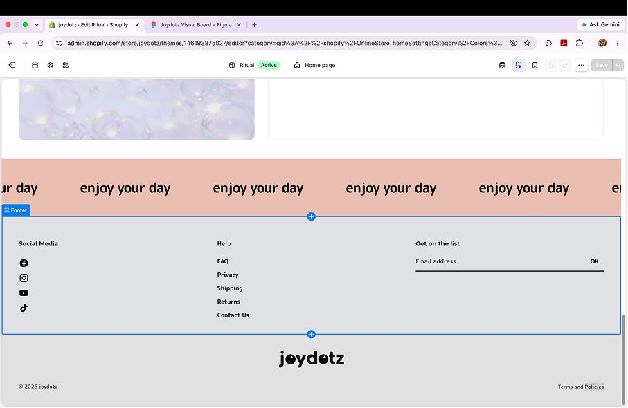
After Before Hover for before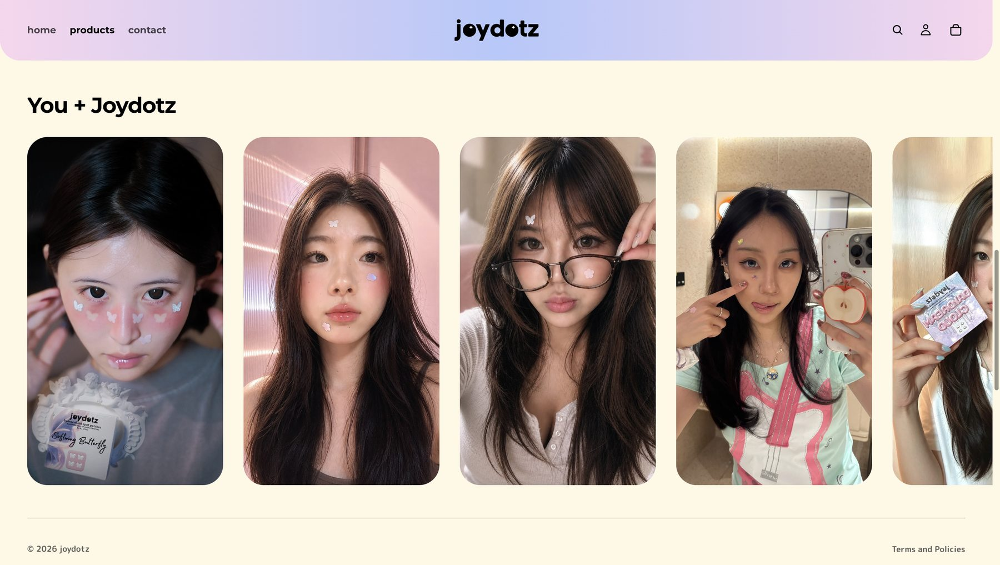
Motion
Product Motion · Daydream Cloud
Campaign Concept · What If Statues Had Pimples?
A proposed campaign, not yet published: famous statues get a breakout, and Joydotz patches step in.
Blind Box Characters
Developed with the Joydotz team: sell the patches as blind boxes, giving each of the three patch shapes (flower, cloud, butterfly) an original character in the style of Sailor Moon or My Little Pony.
Future product drops would become "skins" of those three starter characters rather than entirely new SKUs, modeled on Pop Mart's approach, to deepen brand storytelling for the Gen Z audience beyond "just a daily patch."
Reflection
Took Joydotz from a default Shopify skin into a cohesive, interactive brand system built for its US Gen Z audience: a packaging-derived color palette, a shape-based product language, and a mascot moment that carries the identity to the footer.
Working from an established brand rather than a blank page meant finding the fresh angle already hiding in the packaging, the color gradient, the shape language, instead of inventing one from scratch, then carrying it consistently across every touchpoint.